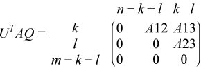
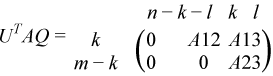
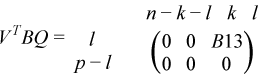
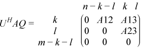
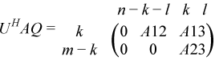
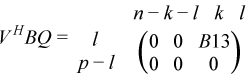

Intel® oneAPI Math Kernel Library Developer Reference - Fortran
Performs preprocessing for a generalized SVD.
call sggsvp3 (jobu, jobv, jobq, m, p, n, a, lda, b, ldb, tola, tolb, k, l, u, ldu, v, ldv, q, ldq, iwork, tau, work, lwork, info )
call dggsvp3 (jobu, jobv, jobq, m, p, n, a, lda, b, ldb, tola, tolb, k, l, u, ldu, v, ldv, q, ldq, iwork, tau, work, lwork, info )
call cggsvp3 (jobu, jobv, jobq, m, p, n, a, lda, b, ldb, tola, tolb, k, l, u, ldu, v, ldv, q, ldq, iwork, rwork, tau, work, lwork, info )
call zggsvp3 (jobu, jobv, jobq, m, p, n, a, lda, b, ldb, tola, tolb, k, l, u, ldu, v, ldv, q, ldq, iwork, rwork, tau, work, lwork, info )
?ggsvp3 computes orthogonal or unitary matrices U, V, and Q such that
for real flavors:
 if m - k - l≥ 0;
 if m - k - l< 0;

for complex flavors:
 if m - k - l≥ 0;
 if m - k-l< 0;

where the k-by-k matrix A12 and l-by-l matrix B13 are nonsingular upper triangular; A23 is l-by-l upper triangular if m-k-l≥ 0, otherwise A23 is (m-k-by-l upper trapezoidal. k + l = the effective numerical rank of the (m + p)-by-n matrix (AT,BT)T for real flavors or (AH,BH)H for complex flavors.
This decomposition is the preprocessing step for computing the Generalized Singular Value Decomposition (GSVD), see ?ggsvd3.
CHARACTER*1. = 'U': Orthogonal/unitary matrix U is computed;
= 'N': U is not computed.
CHARACTER*1. = 'V': Orthogonal/unitary matrix V is computed;
= 'N': V is not computed.
CHARACTER*1. = 'Q': Orthogonal/unitary matrix Q is computed;
= 'N': Q is not computed.
INTEGER. The number of rows of the matrix A.
m≥ 0.
INTEGER. The number of rows of the matrix B.
p≥ 0.
INTEGER. The number of columns of the matrices A and B.
n≥ 0.
REAL for sggsvp3
DOUBLE PRECISION for dggsvp3
COMPLEX for cggsvp3
DOUBLE COMPLEX for zggsvp3
Array, size (lda, n).
On entry, the m-by-n matrix A.
INTEGER. The leading dimension of the array a.
lda≥ max(1,m).
REAL for sggsvp3
DOUBLE PRECISION for dggsvp3
COMPLEX for cggsvp3
DOUBLE COMPLEX for zggsvp3
Array, size (ldb, n).
On entry, the p-by-n matrix B.
INTEGER. The leading dimension of the array b.
ldb≥ max(1,p).
REAL for sggsvp3
DOUBLE PRECISION for dggsvp3
REAL for cggsvp3
DOUBLE PRECISION for zggsvp3
tola and tolb are the thresholds to determine the effective numerical rank of matrix B and a subblock of A. Generally, they are set to
tola = max(m,n)*norm(a)*MACHEPS,
tolb = max(p,n)*norm(b)*MACHEPS.
The size of tola and tolb may affect the size of backward errors of the decomposition.
INTEGER. The leading dimension of the array u.
ldu≥ max(1,m) if jobu = 'U'; ldu≥ 1 otherwise.
INTEGER. The leading dimension of the array v.
ldv≥ max(1,p) if jobv = 'V'; ldv≥ 1 otherwise.
INTEGER. The leading dimension of the array q.
ldq≥ max(1,n) if jobq = 'Q'; ldq≥ 1 otherwise.
INTEGER. Array, size (n).
for sggsvp3
for dggsvp3
REAL for cggsvp3
DOUBLE PRECISION for zggsvp3
Array, size (2*n).
REAL for sggsvp3
DOUBLE PRECISION for dggsvp3
COMPLEX for cggsvp3
DOUBLE COMPLEX for zggsvp3
Array, size (n).
The scalar factors of the elementary reflectors.
REAL for sggsvp3
DOUBLE PRECISION for dggsvp3
COMPLEX for cggsvp3
DOUBLE COMPLEX for zggsvp3
Array, size (MAX(1,lwork)).
INTEGER. The dimension of the array work.
If lwork = -1, then a workspace query is assumed; the routine only calculates the optimal size of the work array, returns this value as the first entry of the work array, and no error message related to lwork is issued by xerbla.
a |
On exit, a contains the triangular (or trapezoidal) matrix described in the Description section. |
b |
On exit, b contains the triangular matrix described in the Description section. |
k, l |
INTEGER. On exit, k and l specify the dimension of the subblocks described in Description section. k + l = effective numerical rank of (AT,BT)T for real flavors or (AH,BH)H for complex flavors. |
u |
REAL for sggsvp3 DOUBLE PRECISION for dggsvp3 COMPLEX for cggsvp3 DOUBLE COMPLEX for zggsvp3 Array, size (ldu, m). If jobu = 'U', u contains the orthogonal/unitary matrix U. If jobu = 'N', u is not referenced. |
v |
REAL for sggsvp3 DOUBLE PRECISION for dggsvp3 COMPLEX for cggsvp3 DOUBLE COMPLEX for zggsvp3 Array, size (ldv, p). If jobv = 'V', v contains the orthogonal/unitary matrix V. If jobv = 'N', v is not referenced. |
q |
REAL for sggsvp3 DOUBLE PRECISION for dggsvp3 COMPLEX for cggsvp3 DOUBLE COMPLEX for zggsvp3 Array, size (ldq, n). If jobq = 'Q', q contains the orthogonal/unitary matrix Q. If jobq = 'N', q is not referenced. |
work |
On exit, if info = 0, work(1) returns the optimal lwork. |
info |
INTEGER. = 0: successful exit. < 0: if info = -i, the i-th argument had an illegal value. |
The subroutine uses LAPACK subroutine ?geqp3 for the QR factorization with column pivoting to detect the effective numerical rank of the A matrix. It may be replaced by a better rank determination strategy.
?ggsvp3 replaces the deprecated subroutine ?ggsvp.